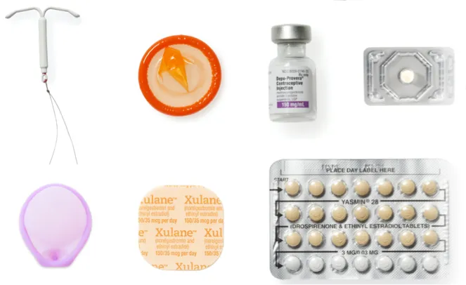

Anti-abortion rights activists protest outside of the U.S. Supreme Court on Tuesday in Washington, D.C. /
Anna Moneymaker/Getty Images
In June 2022, the Supreme Court overruled Roe and Casey in Dobbs v. Jackson Women's Health Organization on the grounds that
the substantive right to abortion was not "deeply rooted in this Nation's history or tradition." Also known as the
Roe v. Wade Overturn.
Since the Roe v. Wade Overturn, abortion is no longer protected by the constitution of the United States. After losing their final protection against unwanted pregnancy, females started to turn their heads to birth control to protect themselves from unintended pregnancy.
As abortion is no longer protected by the federal law, many states started to outlaw abortion, making abortion less and less accessible.
Due to the absence of ensured abortion in many states, females turned more to birth control. By tracking the research keywords for the four most common methods of female contraception, a visible increase in number was found right after the Roe V. Wade Overturn.
Below are some charts that show the search trend. The number of search for different forms of female contraception increased around the date when the Roe v. Wade overturn took place.
The highlighted parts of the charts display the changes Before and After the Roe v. Wade Overturn.
Mitzi Rivas, left, hugs her daughter Maya Iribarren during a protest in San Francisco after the Supreme Court’s decision to overturn Roe v. Wade. (Josie Lepe / Associated Press)
According to a
survey taken by TIME in July 2022, female respondents reported anxiety and confusion post Roe.
“People are very anxious, and people are very confused,” says Dr. Jessica Rubino, a consulting physician for Nurx and family medicine physician who provides abortion care in Austin. “It’s hard to know what sort of legislation is going to stick at the state or national level.”
However, despite the increasing interest for Female Contraception, statistics prove that it is not working well. The increase of birth rate since 2022 is quite unusual after the Roe v. Wade Overturn.
Studying the accessibility of Female Contraception suggests one answer to this unusual phenomenon. Due to the Roe v. Wade Overturn, the inaccessibility of birth control became statistically obvious.
The so called "Contraceptive Deserts" are prevalent all over the country, which was always there, but was kept unseen until now.
image by coloresadoptions(https://coloresadoptions.com/pregnant/unplanned-pregnancy/)
Currently, over 19 million women face significant challenges in accessing the contraception they need, living in what we call "contraceptive deserts." These areas lack convenient access to health centers that provide a full range of contraceptive methods.
In the heart of these deserts, 1.2 million women live in counties without a single health center offering the full spectrum of contraceptive options. For these women, finding a provider, getting reliable information, and choosing the right birth control method becomes incredibly difficult.

image by besider (https://www.bedsider.org/)
Due to the Roe v. Wade Overturn, the role of Female Birth Control became more significant as it has now become the primary choice as a
Final Defense Line for females to avoid unwanted pregnancy.
Immediate support is necessary for those in need, and raising awareness is crucial for younger generations.
Female Birth Control is the Final Defense Line.